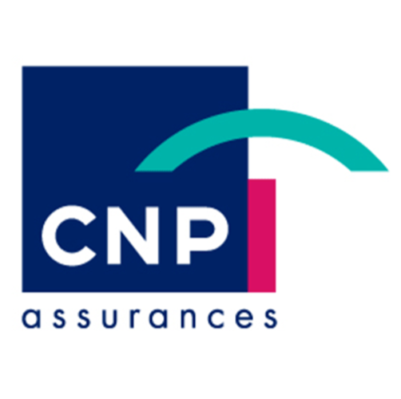

Mon alternance au sein de CNP Assurances

Travailler au sein de CNP Assurances est une opportunité pour moi de mettre au service mes compétences au sein d’une entreprise engagée et innovante.
Mon aventure débute en septembre 2023 en tant qu’Assistante décisionnelle et informatique au sein de la direction du Pilotage et de la performance
Mes missions :
Garantir la fiabilité des données saisies dans les systèmes d'informations
Effectuer des extractions de données et les mettre en forme
Réaliser des calculs et traitements
Produire des tableaux de bord, graphiques, statistiques et états de suivi
Contribuer au fonctionnement des systèmes d'information (suivi d'exploitation, gestion d'incidents)
Détecter les anomalies courantes et mettre en œuvre les mesures correctives adaptées
Assurer l'interface avec les équipes informatiques